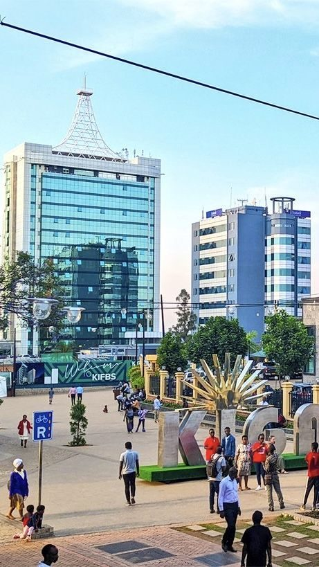

A place for every voice
About and access
Good stories bring us together. Everyone should be able to experience them.

Our mission
StoryCast shares short stories from everyday life. We make space for different voices, small moments, and new perspectives.
Listen, watch, or read. However you experience a story, you belong here.
Accessibility features
- Full, timestamped transcripts for every story
- Captions for all video stories
- Keyboard-friendly navigation and controls
- Clear headings and labeled page regions
- Visible focus indicators and high contrast
- Nothing plays automatically
Keyboard shortcuts
Standard keyboard controls work throughout StoryCast.
- Tab moves to the next link or control.
- Shift + Tab moves to the previous link or control.
- Enter follows a link or selects a transcript line.
- Space activates a focused player button.
Get involved
Have a story to share, or an idea to make StoryCast more accessible? We’d love to hear from you.